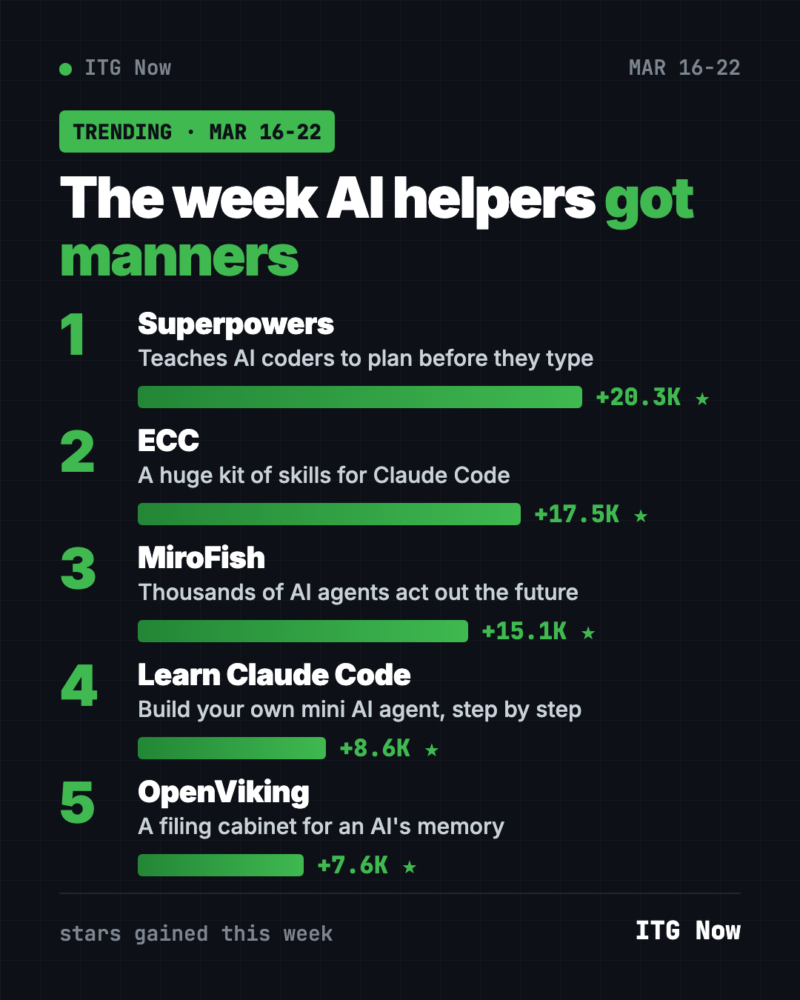
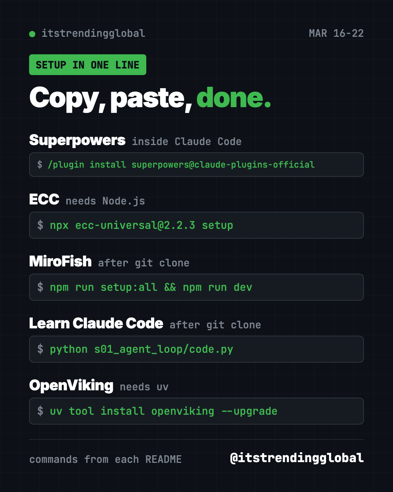

Home › Top repos › GitHub trending this week
Trending GitHub Repos March 16 2026: 5 Free AI Picks
- Top repos
- Published 2026-10-15
- 7 min read
- Updated 2026-10-16
- By the It's Trending Global team
Trending GitHub repos March 16 2026: Superpowers, ECC, MiroFish, Learn Claude Code and OpenViking. What each free tool does and how to start.
The trending GitHub repos March 16 2026 week belonged to tools that make AI helpers behave better. Superpowers led with about 20,300 new stars, followed by ECC, MiroFish, Learn Claude Code and OpenViking. All five are free and open source.
Below: what each one does in plain words, plus a copy-paste setup line.
Key takeaways
- Superpowers teaches AI coding helpers to ask questions and plan before they write code.
- ECC is a giant add-on kit for Claude Code, with hundreds of ready-made skills.
- MiroFish lets thousands of AI "people" act out a news story to guess what might happen next.
- Learn Claude Code is a free course that shows how AI agents work by building a small one.
- OpenViking gives AI agents a tidy memory you can open and read, like folders on a computer.

This week's 5 at a glance
| Repo | What it does | Best for | Stars this week | License |
|---|---|---|---|---|
| Superpowers | Makes AI coders plan, test and review | People who build with Claude Code | +20.3K | MIT |
| ECC | Huge kit of skills and settings for AI coders | Claude Code and Codex fans | +17.5K | MIT |
| MiroFish | AI crowd simulation that "predicts" outcomes | Curious thinkers, writers, analysts | +15.1K | AGPL-3.0 |
| Learn Claude Code | Step-by-step course on building an agent | Students and learners | +8.6K | MIT |
| OpenViking | Memory and knowledge store for agents | Builders of AI helpers | +7.6K | AGPL-3.0 |
Star gains are for March 16 to 22, 2026. Totals below were checked on GitHub on October 16, 2026.
1. Superpowers: an AI coder that asks before it acts
Stars: +20.3K this week · about 300K total now
What it is: Superpowers is a pack of "skills" for AI coding helpers like Claude Code. A skill is a set of written instructions the AI follows for one kind of job. With Superpowers, the AI does not rush into code. It asks what you are really trying to build, shows you a short plan, and only then starts work.
Who it's for: Anyone who uses Claude Code or a similar helper and is tired of it guessing wrong.
Everyday use: Describe a small app idea, like a family chore chart. Superpowers makes the AI ask you questions first, so the result matches what you pictured.
Install it: Open Claude Code and type:
/plugin install superpowers@claude-plugins-official
Or ask your AI helper:
Install the Superpowers plugin from github.com/obra/superpowers and explain in plain words what changed.
See Superpowers on GitHub · Read our full guide
2. ECC: a giant toolbox for Claude Code
Stars: +17.5K this week · about 280K total now
What it is: ECC started life as "everything-claude-code" and now lives at affaan-m/ECC. Its README lists 71 agents and 311 skills, plus memory and a security scanner. The idea is simple: install good habits once, and your AI helper plans, tests and checks its own work every time.
Who it's for: People who already use Claude Code or Codex and want a ready-made setup instead of building their own.
Everyday use: Ask your helper to fix a bug on your website. ECC nudges it to test the fix before it says "done."
Install it: You need Node.js, a free program from nodejs.org. Then paste:
npx ecc-universal@2.2.3 setup
Or ask your AI helper:
Set up ECC from github.com/affaan-m/ECC with the smallest "core" profile and tell me what it added.
See ECC on GitHub · Read our full guide
💡 Tip: ECC's README warns you to install it only from its official GitHub page or its npm packages. Copycat versions exist.
3. MiroFish: let an AI crowd play out the future
Stars: +15.1K this week · about 79K total now
What it is: MiroFish is a "swarm" prediction engine. You upload some starting material, like a news report or even a short story. Then you ask a question in plain words. MiroFish builds a small digital world where thousands of AI agents act and react, and it reports what happened.
Who it's for: Writers, students and analysts who like "what if" questions. Treat answers as a thought experiment.
Everyday use: Feed it a short story and ask how the characters might react if the ending changed.
Install it: You need an AI model key (the README suggests Alibaba's Qwen) and a free Zep Cloud account. Then:
git clone https://github.com/666ghj/MiroFish.git
cd MiroFish
cp .env.example .env
npm run setup:all
npm run dev
Open http://localhost:3000 in your browser.
Or ask your AI helper:
Install MiroFish from github.com/666ghj/MiroFish, help me fill in the .env keys, and run one small test.
4. Learn Claude Code: build a tiny AI agent yourself
Stars: +8.6K this week · about 79K total now
What it is: A free course, in English, Chinese and Japanese. It explains how tools like Claude Code work by building a mini version, one chapter at a time. Each chapter is a short Python file you can run.
Who it's for: Students and curious people who want to understand AI agents, not just use them.
Everyday use: Spend one evening on chapter one and watch a small loop read a request and run a command.
Install it: You need Python and an Anthropic API key (a paid password-like code for Claude).
git clone https://github.com/shareAI-lab/learn-claude-code
cd learn-claude-code
pip install -r requirements.txt
cp .env.example .env
python s01_agent_loop/code.py
Or ask your AI helper:
Walk me through chapter s01 of github.com/shareAI-lab/learn-claude-code and explain each line simply.
See Learn Claude Code on GitHub
5. OpenViking: a filing cabinet for an AI's memory
Stars: +7.6K this week · about 40K total now
What it is: OpenViking comes from Volcano Engine, ByteDance's cloud company. It stores everything an AI agent knows (documents, memories and skills) as folders and files. You can open any folder and see exactly what the AI remembered.
Who it's for: People building their own AI helpers who want memory they can inspect.
Everyday use: Load your project notes once, then let your agent find the right page instead of rereading everything.
Install it:
uv tool install openviking --upgrade && openviking-server init
Or ask your AI helper:
Install OpenViking from github.com/volcengine/OpenViking, add one of my folders, and show me what it stored.

Which one should you try first?
- You use Claude Code every day: start with Superpowers. One line.
- You want everything in one box: try ECC, but start with the small core setup.
- You love "what if" questions: try MiroFish. Expect some setup.
- You want to learn, not just use: open Learn Claude Code chapter one.
- You build AI helpers: look at OpenViking and its browser demo.
⚠️ Heads up: MiroFish, Learn Claude Code and OpenViking need an AI model key. Using those keys usually costs a little money per use.
For the full month, see the best GitHub repos of March 2026 and March 2026 in AI news. The week before is March 9 to 15, and the next one is March 23 to 29.
FAQ
What were the trending GitHub repos the week of March 16, 2026?
Superpowers, ECC, MiroFish, Learn Claude Code and OpenViking. Superpowers gained the most, about 20,300 stars.
Are these tools free?
Yes, all five are free and open source. Some need an AI model key, which can cost money per use.
Do I need to code to use them?
Not for Superpowers or ECC. You paste one line, and the AI helper does the rest. The others need a bit of terminal work, or you can let Claude or Codex do it for you.
Can MiroFish really predict the future?
No tool can. MiroFish runs a simulation with AI agents. It is useful for exploring ideas, not for making money or life decisions.
What is a GitHub star?
It is like a bookmark or a like. Stars gained in a week show what people are excited about right now.
Want a new free tool explained every day? Follow ITG Now on Instagram.
Keep reading

Trending GitHub Repos October 2026: The Top 5 So Far
The trending GitHub repos of October 2026 so far: a free Photoshop-style editor, an AI art studio, a big AI model for gaming PCs and more, explained.

Trending GitHub Repos This Week, Oct 5 2026: The Top 5
Trending GitHub repos this week Oct 5 2026: Matt Pocock's skills, the openGym workout tracker, e2e testing, HyperFrames video and claude-mem memory.

GitHub Trending September 28, 2026: Hindsight and Paperclip
GitHub trending September 28 2026: Hindsight, Paperclip, NVIDIA's OpenShell and a free 542-lesson AI course, with setup steps for each.